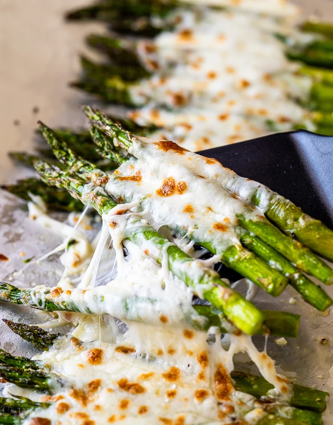

asparagus (the cheesy way)
ingredients
- asparagus
- salt n pepper
- mozzarella
- parmesan
- olive oil

instructions
- cut the asparagus and line on a baking sheet
- drizzle oil on the asparagus, season to taste
- throw a lot of cheese all over, and bake for 20 minutes at 375